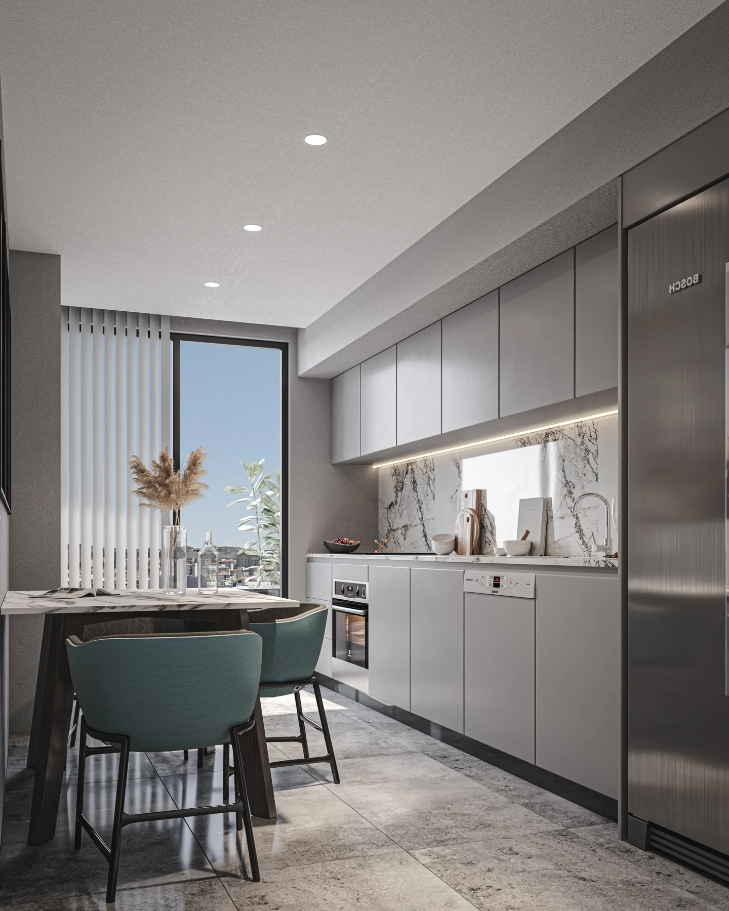

PROJECT OVERVIEW
Cuento Elite
A residential development in Tatlısu, Ümraniye, near the Ataşehir area. The sixteen-storey building brings apartment and loft options together with landscaped outdoor spaces and commercial areas.
Floors16
Apartment options2+1 · 3+1
Loft options2
Photo gallery

Official architectural illustrations; these images do not show the current construction condition.
EVERYDAY LIVING
Living spaces
The published concept includes smart-home systems, underfloor heating, indoor parking, a lobby, children’s play areas, landscaping and a sports court.
LOCATION AND ACCESS
Tatlısu · Ümraniye · Istanbul
Tatlısu Mahallesi, Şenol Güneş Bulvarı, Akit Sokak No:4, Ümraniye. The location is close to the Ataşehir area and the Istanbul Financial Center.
YOUR NEXT STEP
Choose your home
Request the current apartment selection, price and payment options. Compare the exact unit, view and included services before arranging your purchase.